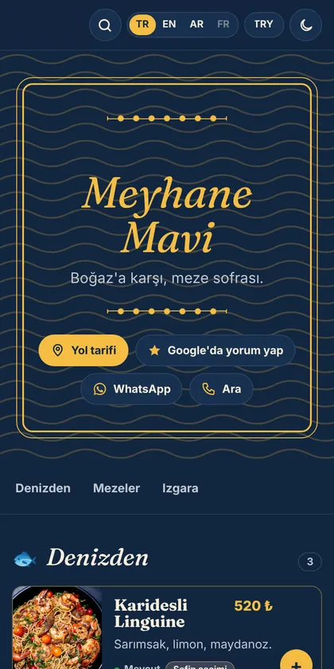

Gece okunur
Koyu tasarımlar, yüksek kontrast.
Meyhane, Neon, Noir ve Velvet koyu tasarımlarla gece okunur. Mezeler, rakı, kokteyller ve şarap listesi kategorilere ayrılır; tükenen ürünü saniyede işaretlersin.

Koyu tasarımlar, yüksek kontrast.
Meze, kokteyl, şarap, bira ayrı sekmelerde.
Instagram ve TikTok tek dokunuşta.
Ürünleri istediğin an açıp kapatabilir, stok durumunu güncelleyebilirsin; değişiklik misafire hemen yansır.